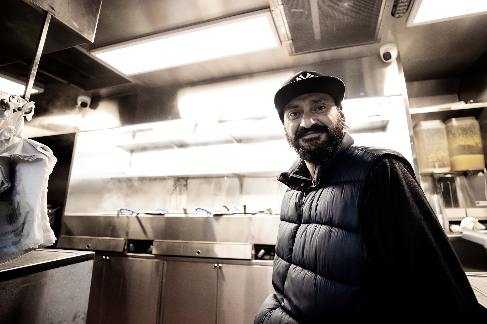
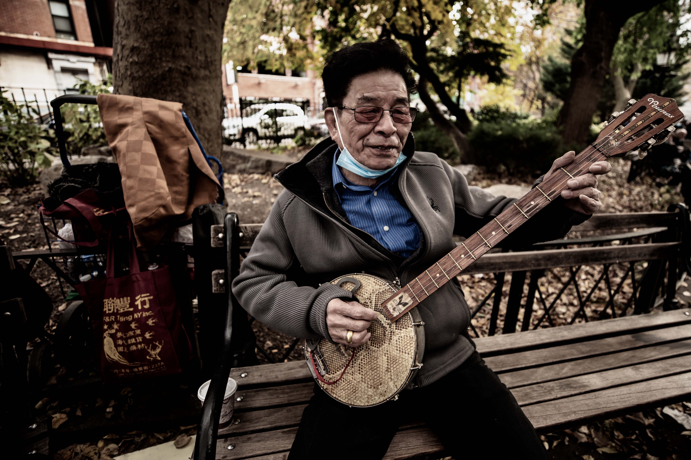
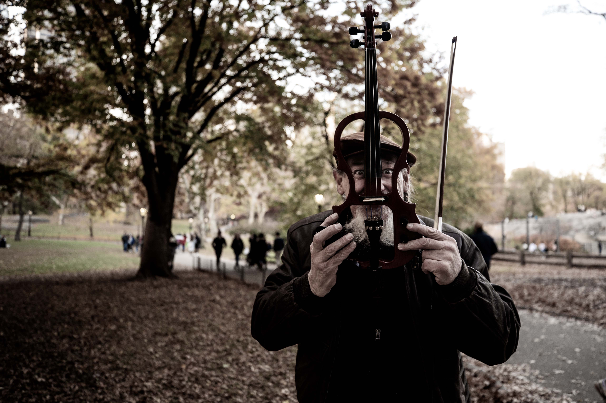
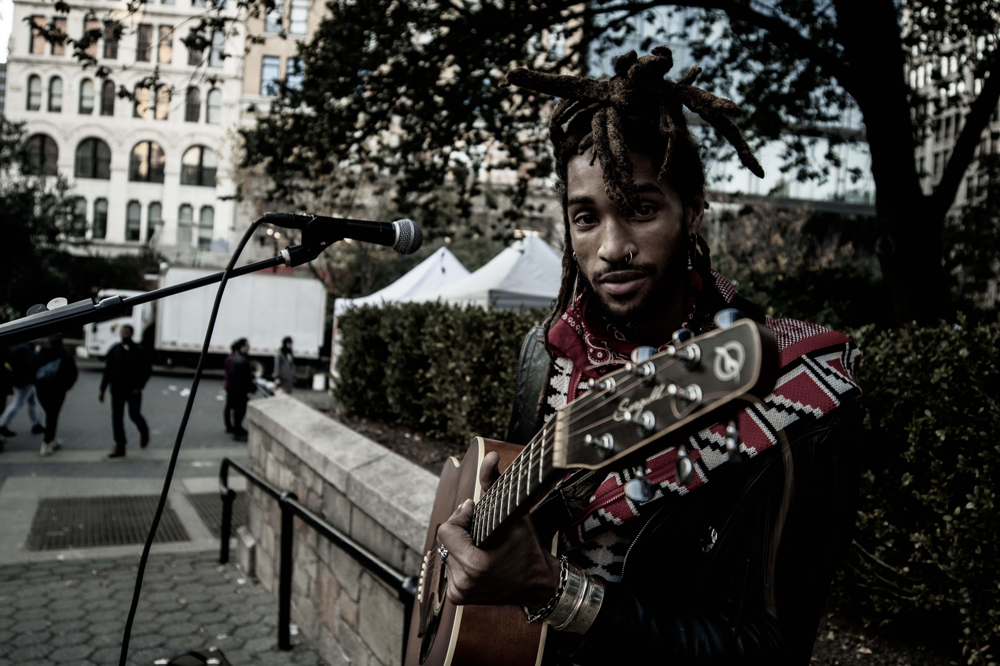
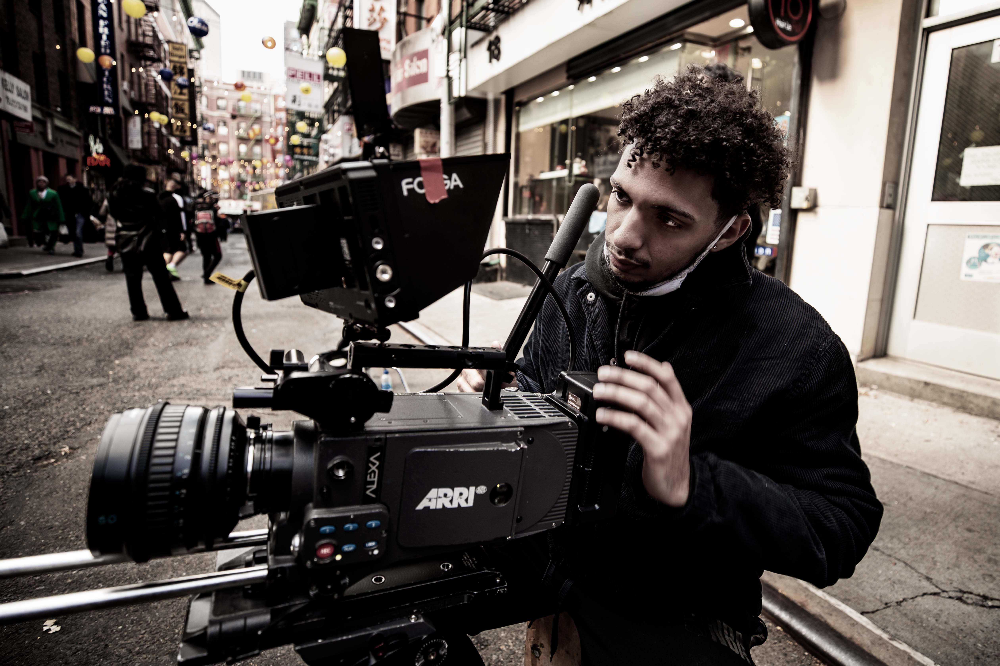
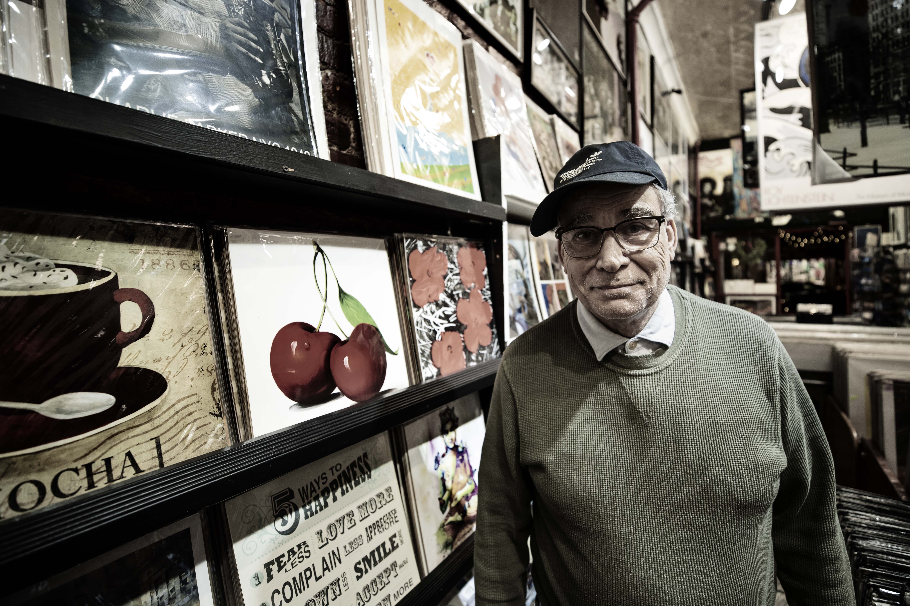
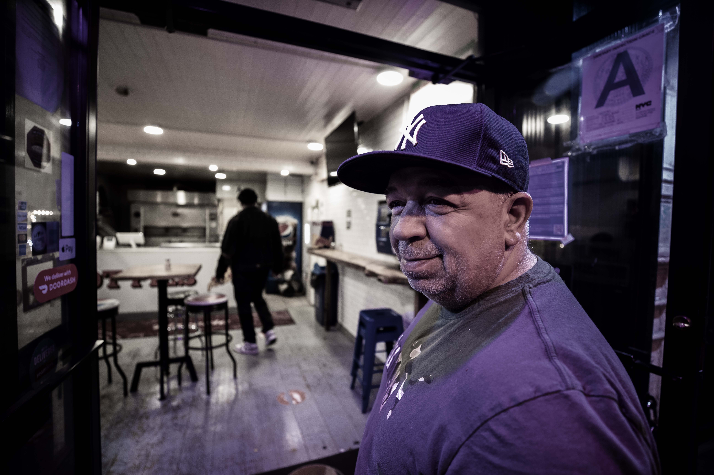
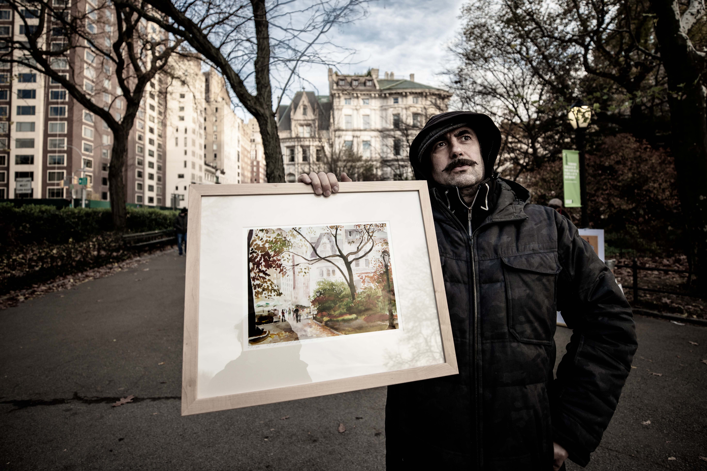
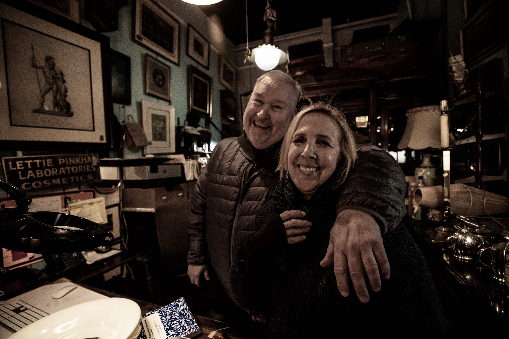
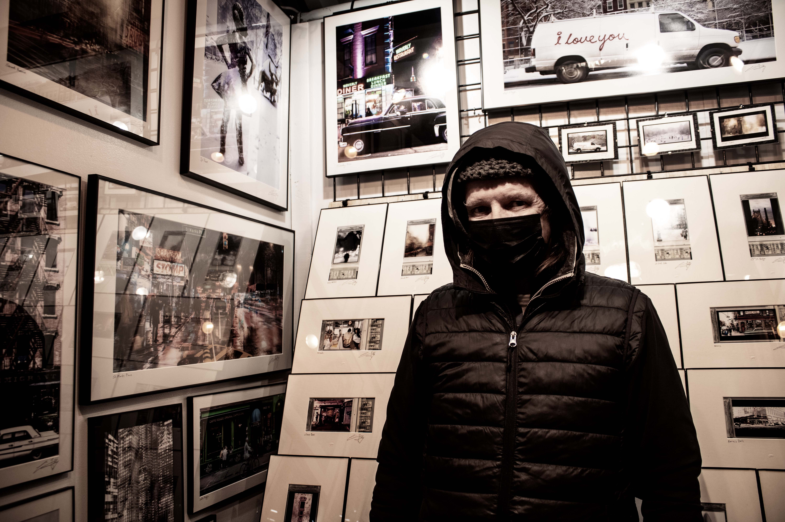

"Cities are all about people than places. Walking the streets in search of humans and their stories was a very gratifying experince
"Exploring the idea of how memories impact us on a very pyshological level, but in a more provokative and explicit sense was very taxing"


"Black and White is just abstracting colours in a way the veiwers are going to understand. Looking at a colourscape and muting it to see the effect was a very challenging process"


About Me